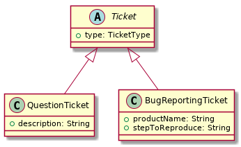

Json 的序列化和反序列化是我们常见的操作，很多库都提供了这样的能力帮助我们完成这样的操作。
但业务有时可能变得稍微有些复杂，需要将一个抽象类的子类实例序列化成一个 Json，也需要将一个 Json 反序列化成一个抽象类。而在反序列化的时候，就需要找到真正的子类。
Jackson 是 Java 中常用的一种进行 Json 序列化和反序列化的库，它能否面对这样的业务呢？
业务假设
假设我们有这样的类结构关系：

代码写出来长这样：
1 | package cn.gaoyuexiang.practice.jackson.inheritance; |
可以在 https://github.com/kbyyd24/jackson-inheritance-practice 看到完整代码
接下来所有的序列化和反序列化操作，都是针对类型为 Ticket 的变量来执行的，而不考虑真实的类型。
序列化
序列化不会遇到任何挑战。因为不管变量的真实类型是什么，Jackson 总是会通过所有的 getter 方法来找到所有的属性和值，并序列化到 Json 中。
反序列化
反序列化就不同了，因为程序不知道 Json 应该对应到哪一个子类，所以我们会写出这样的代码：
1 | Ticket ticket = new ObjectMapper().readValue(json, Ticket.class); |
而抽象类又不能创建出实例，所以这一行代码就会因为这个限制而出错。
为了让这一行代码成功执行，为 ticket 变量找到真正的类型，我们就需要使用 @JsonTypeInfo 注解。
这个注解可以用到属性上，也可以用到类上，影响的只是作用范围，对效果没什么影响。本文只有使用到类上的例子。
指定 Json 中标识类型的值
使用这个注解时，需要使用到 use 属性，表示使用哪种信息来作为 Json 对应的实际子类的标识符。我们来看其中的几种。
CLASS 标识
使用它时，我们的抽象类得写成这样：
1 | ( |
这里的 CLASS 表示使用全限定类名来表示 Json 对应的类型，并且会在序列化的 Json 中插入一个 key 为 @class 的信息，值为类的全限定名。
比如下面的代码，就会得到这样的 Json：
1 | def ticket = new QuestionTicket() |
1 | {"@class":"cn.gaoyuexiang.practice.jackson.inheritance.QuestionTicket","type":"QUESTION","description":"some description"} |
显然，Json 中的 @class 并不是 QuestionTicket 对象的字段，而是我们的注解导致这个字段的出现。
这时我们使用这个 Json 来做反序列化，就能得到一个 Ticket 对象，并且实际类型是 QuestionTicket。
MINIMAL_CLASS 标识
这个标识同样使用类名来作为 Id，但是与 CLASS 不同，它不使用全限定名，而是根据子类来计算出应该是使用单纯的类名，还是包含一部分的包名。并且，最终的值前面会加上一个 .。
使用这个标识时，使用 @c 作为 key 插入到 Json 中，上面的代码会得到这样的 Json
1 | {"@c":".QuestionTicket","type":"QUESTION","description":"some description"} |
NAME 标识
NAME 标识表示使用逻辑名称来标识 Json 对应的类型。默认情况下的逻辑名称是类名。
比如下面的代码会产生的 Json：
1 | ( |
1 | {"@type":"QuestionTicket","type":"QUESTION","description":"some description"} |
我们可以使用 @JsonSubTypes 注解来指定逻辑名称和子类的映射关系：
1 | ( |
1 | {"@type":"QUESTION","type":"QUESTION","description":"some description"} |
@JsonSubTypes.Type注解的 name 属性没有指定时，Jackson 会查找这个类上的@JsonTypeName注解的值用作 name ；如果也不存在，就会使用类名。
我们可以看到 @JsonSubTypes 注解帮助我们维护了一个逻辑上唯一的字符串和子类的映射关系，这样 Jackson 就可以根据这样的映射关系来进行序列化和反序列化了。
指定标识符在 Json 中的表现形式
上面的三种标识符类型，都是在原本对象序列化的 Json 中插入了一个字段来完成的。这是因为 @JsonTypeInfo 的 include 属性默认值是 PROPERTY，也就是说是在 Json 中插入一条 property。
如果 Json 中恰好有一条 property 的名字和要插入的 property 重复，那么就可能看到 Json 中出现两个相同 key 的字段。这可能导致一些 Json 库识别这个 Json 时出现错误，因为 Json 规范没有规定 Json 中是否可以出现两个相同的 key，具体会表现为什么行为依赖于每个库的实现。
当然，除了 PROPERTY 还有其他的形式可以选择。
WRAPPER_ARRAY
这种方式会将 Json 序列化成一个数组，第一个值是 Id，第二个值才是真正的对象序列化后的 Json。
1 | ( |
1 | ["QUESTION",{"type":"QUESTION","description":"some description"}] |
WRAPPER_OBJECT
与 WRAPPER_ARRAY 类型，不过这种形式不是得到的数组，而是一个对象，其中的 key 就是 Id。
1 | ( |
1 | {"QUESTION":{"type":"QUESTION","description":"some description"}} |
EXISTING_PROPERTY
顾名思义，这个形式表示将会使用原 Json 本来就有的一个字段。
使用这种形式时：
- 序列化将不会对原本的 Json 做任何修改
- 我们需要指定 property 属性，以表明使用原本 Json 中的哪一个字段来表示 Id
这两点表明，在使用这种形式时，原本的 Json 的这个字段自身就应该表示出对应的类型。
反序列化时，Jackson 会找到指定的 property，通过它的值和 JsonSubTypes 的配置来确定应该使用哪一个子类。
property 属性在任何时候都可以使用，它可以替换掉默认的
@class、@c和@type字段。
1 | ( |
1 | {"type":"QUESTION","description":"some description"} |
另外，还有一种表现形式是 EXTERNAL_PROPERTY，可以参考这个问题
总结
我们了解了 Jackson 可以通过不同的标识符、以不同的形式来识别一个 Json 应该映射到哪一个类型，我们可以对如何使用做一个简单的判断。
无论是使用 CLASS 还是 MINIMAL_CLASS 类型，都会在 Json 中插入类的信息，这样既增加了 Json 和实现的耦合，也不利于重构，还导致了技术细节的泄露。
使用 NAME 这样的逻辑名称来标识 Json 类型看起来是比较好的做法，并且使用 Json 中本来就有的信息时，就完全去除了技术实现对 Json 的侵入，降低了耦合。
至于表现形式，则应该由 Json 本来的设计来决定。Jackson 已经给出了好几种支持，可以选择最接近设计的一种。